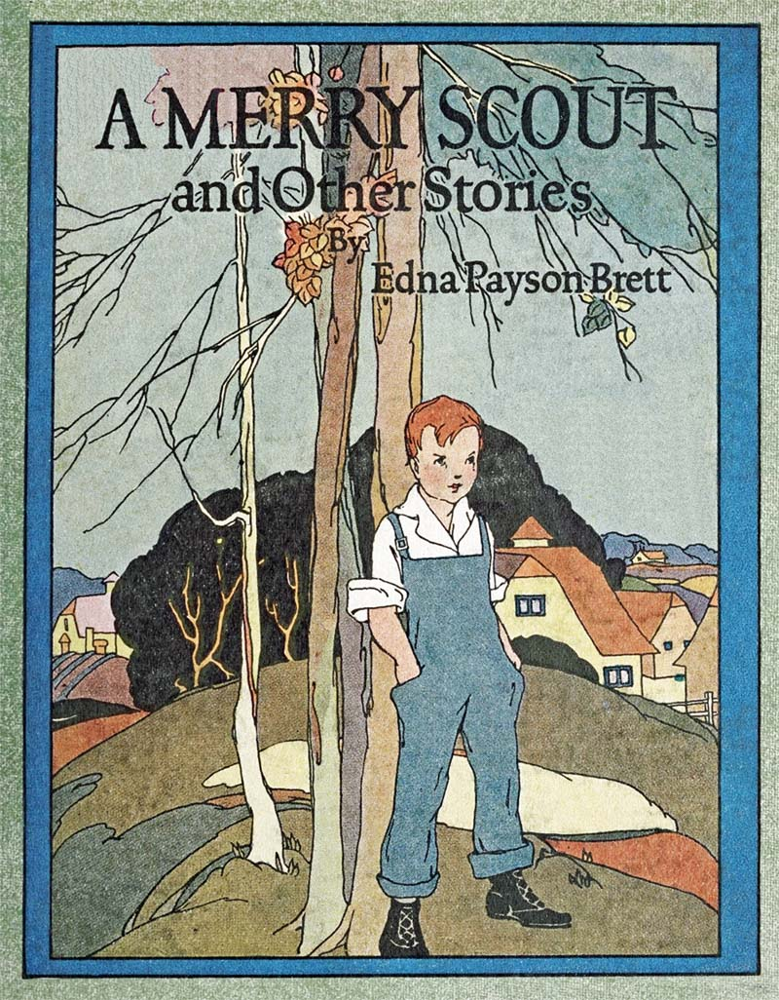
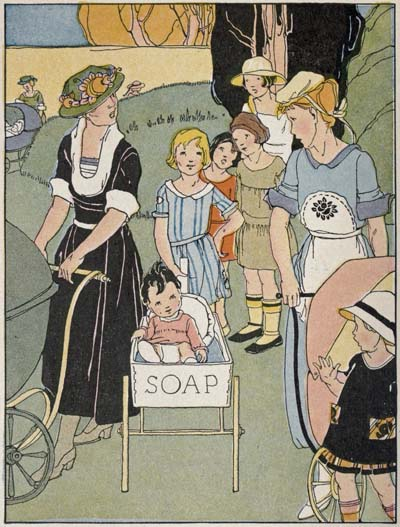
Tilda and baby Maggie in her brand-new coach
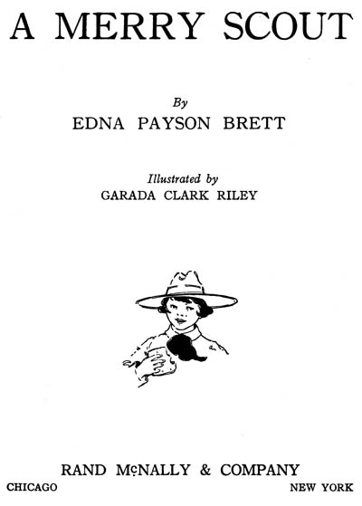
A MERRY SCOUT
By
EDNA PAYSON BRETT
Illustrated by
GARADA CLARK RILEY
RAND Mc. NALLY & COMPANY
CHICAGO NEW YORK
Copyright, 1922, by
Rand Mc. Nally & Company
Made in U.S.A.
| PAGE | |
| A Merry Scout | 7 |
| Lending the Baby | 28 |
| Robert’s Adventure | 44 |
| Sandy’s Valentine | 55 |
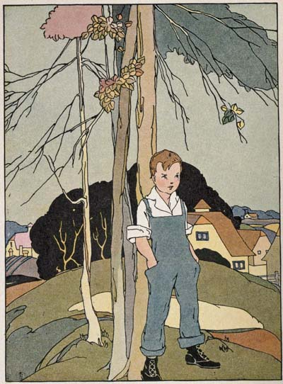
Davy was counting the time until he could be a real scout
A MERRY SCOUT
He didn’t belong to any patrol—he wasn’t a real scout at all, but it wasn’t Davy’s fault. He was only nine and a half, you see, and that meant two years and six months of waiting—oh, such long waiting it seemed to Davy—before he could wear the coveted arrow-head badge of the tenderfoot scout and go hiking and camping like big Cousin Fred.
That is how the figures stood late in December. It was the summer before, at Grandfather’s, that Davy had first begun counting the time until he should be twelve. There, at the farm, he had met Cousin[8] Fred. Fred was sixteen years old, a first-class scout, patrol leader in his home town, and a winner of the life-saving merit badge. But he had never felt too big to take Davy for a Sunday hike over the hills, relating thrilling tales of scout camp life and wood-craft; telling all about scout law, with its twelve hard things every scout must be and the daily good turn every scout must do; explaining the different badges, the oath, and the salute. What wonder that Davy wanted to be a scout most of anything in the world!
Shortly after his return in the autumn Davy determined to take matters into his own hands. Accordingly, one day, standing before his looking-glass and raising his right hand, palm to the front, he solemnly swore to the oath, all by himself; then he pinned under his jacket, right over his heart, a secret badge of his own designing. There he had worn it ever since, and considered himself as honor-bound to the oath as any scout living.
[9]
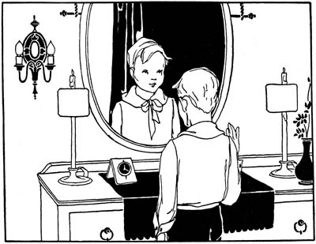
Standing before his looking-glass, Davy swore to the oath, by himself
It was now two days before Christmas. There had been a snowstorm, clearing about noon. Davy had hailed it with whoops of delight. Now, by shoveling walks, he might earn money to get a Christmas present for Mother and Father, after all. It could not be the magnificent azalea and real leather pocketbook he had first dreamed of—that[10] had been on the expectation of at least six snowstorms; but there was a gay little Jerusalem cherry tree for Mother, and for Dad a beauty of a tie, red and green changeable. Davy had selected them days ago—all he was waiting for was a job. What luck it should be Saturday and no school!
[11]
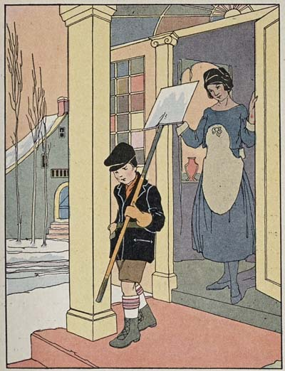
For one reason or another, nobody seemed to need Davy’s services
When the one o’clock whistle blew, Davy and his snow shovel were well on their way, bound for an attractive-looking corner house out on the avenue—corner houses were twice the job of ordinary places. Davy pressed the bell button confidently. A sour-looking maid opened the door an inch, snapped out “No,” and banged it to before Davy could get out a word. He stood staring at the door for a moment, his mouth still open, but a minute later he was striding across the street to the opposite corner, once more wearing his sturdy scout smile. There, however, they kept a hired man; next door,[12] a big boy was already at work. For one reason or another, nobody seemed to need Davy’s services, and it began to look as if Daddy and Mother might not get their Christmas gifts at all; only, Davy was determined. At last a nice little lady twinkled “yes” over her spectacles. But Davy was only on his third contract, with a shortage of ten cents staring him in the face, when the town clock struck four.
“Well, I declare, you work as if you meant business!” A jolly old man paused at Davy’s elbow. “Come up to number seventy Lexington Avenue—electric light in front—and I’ll give you a job. My pay is thirty cents. If you aren’t there by a quarter of five, I’ll take it you’ve struck something nearer by and do it myself.”
“Oh, I’ll be there, all right. Thank you, sir!” Davy’s spirits rose to the crown of his cap. The necktie and cherry tree were in sight again—and a box of candy too.
[13]
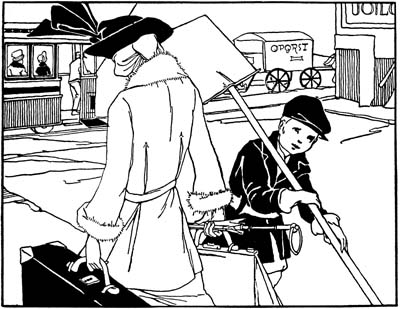
Davy nearly ran down a young lady dashing along with a suitcase and
an umbrella, in a frantic effort to overtake a passing trolley
Fifteen minutes later he was scuttling out to Lexington Avenue. As he was crossing the street, a block or two from the railroad station, he nearly ran down a young lady dashing along with a suitcase, a handbag, and an umbrella, in a frantic effort to overtake a passing trolley.
[14]“Hey, there, hey!” yelled Davy, but the car whizzed right along.
“Oh, dear!” panted the young lady, dropping her suit case. “I’ve lost it, and there won’t be another Fletcher Avenue car for fifteen minutes.” She looked as if about to drop, herself, and Davy involuntarily stretched out a small hand to steady her.
“Thank you,” she gasped. “I do feel a little shaky, running with this heavy luggage. I believe I’ll go around the corner to the drug store and get something hot—provided I can secure a trusty young man to watch my suitcase.” She smiled confidently down into Davy’s honest face. “I’ll be back in ten minutes, in time to catch the next car.”
“Oh, you can trust me, sure!” Davy smiled back. A scout has to be helpful and courteous, especially to people in trouble.
“And you’ll stay right here with it and not let anyone touch it? It contains all my Christmas presents, you see.”
[15]Davy promised with his hand over his badge, but of course she couldn’t see that away under his jacket!
He watched her anxiously as she crossed the street and turned the corner. Then he sat down on one end of the bag, his snow shovel at his feet, and began to consider.
It was now twenty-two minutes after four by the clock in the little tailor shop at his left, and he must meet his appointment at a quarter of five or lose his job. Luckily, he had planned to get there ahead of time—and she would be back in ten minutes—so he’d keep his date all right.
Trinity chimes pealed the half-hour. Eight minutes gone, and she hadn’t returned.
Now in the distance appeared a Fletcher Avenue car—her car, that she would surely be back to take! It approached, passed—and she hadn’t come. Something must have happened! If he could only go around the corner and find out—but there was his promise.
[16]Another five minutes gone—why didn’t she come? He might still make it if he ran.
The chimes rang out a quarter of five! It was all up now about the job, and he was still ten cents short on his Christmas fund, for he could not take a tip from the lady—a scout may never accept pay for a good turn. A chill wind was coming up, and it was growing darker and darker on the lonely corner. Davy stood up and stamped his feet to get out the numbness. But a scout has to be cheerful, no matter what, and he tried to whistle.
The town clock struck five. The little tailor came out of his little shop, rattled his big key in his door, and was gone, leaving Davy lonesomer than ever. He brushed his eyes with his coat sleeve. A scout cry? Never! But he was so cold and lonesome and disappointed about the job! He hadn’t thought that being a scout would be just like this.
[17]Then suddenly, clearer than the chimes, he seemed to hear Cousin Fred’s cheerful voice again, reciting their favorite passage from the law: “A scout is brave. He has the courage to face danger in spite of fear.” And Davy knew, for sure, that he wasn’t going to desert his post, no, not even if it meant an all-night watch! He turned up his coat collar and with better success started whistling again, keeping time with his toes as he paced up and down.
“Hello, pard, waitin’ fer yer airship?” A burly young tough whom Davy had noticed hanging around the opposite corner swaggered up with a cigarette in his mouth. “What yer got there? Nuggets or bombs?” giving the suitcase a kick. “Aw, say,” he added, with a crafty smile, “I’ll mind it whilst yer beat it to Jakey’s fer a bag o’ peanuts,” and he held out a nickel.
[18]
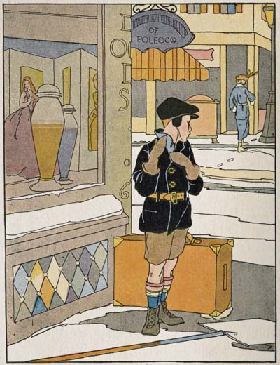
Davy turned up his coat collar and started whistling
[19]“Oh, no, thank you.” Davy sat down on the suitcase in a hurry. “I couldn’t think of leaving it to anyone, not even somebody I know. I promised her, you see—the young lady—to keep it till she came back. It’s got all her Christmas presents in it!” Davy added proudly.
The ruffian’s eyes narrowed. He cunningly changed his tactics. “Say, kid, what did she look like—her that belongs to the bag?”
“All kind o’ brown clothes and pretty and dreadful white in the face. Maybe you’ve seen her?” wistfully.
“Well, what do yer know!” Davy felt his arm clutched tight. “Believe me, pard, that young lady’s a pertic’ler friend o’ mine! And if you’ll jest remove yerself from her trunk there, I’ll be dee-lighted to fetch it to her. Here, I’ll stand fer her tip,” trying to slip a coin into Davy’s hand.
“No, sir!” Davy set his jaw fast and plumped down his little body more protectingly than ever over his charge.
[20]“Aw, yer won’t, won’t yer? We’ll see,” sneered the ruffian, casting a furtive glance to right and left.
In an agony Davy followed his glance, but no help was in sight—save an approaching trolley, and that probably wouldn’t stop. Oh, if only some one would come, or if he were only bigger, or had a magic sling like that David of old! But no, all unarmed he must meet his giant Goliath. Was ever a true scout up against heavier odds? Then, in his dire need, he seemed to hear Cousin Fred’s voice again, “A scout has the courage ... to stand up for the right ... against the threats of enemies ... and defeat does not down him.”
Davy braced himself for whatever might come—and it came promptly. A sharp wrench, a vicious punch, and the suitcase was in the hands of the enemy, and Davy flattened on the ground, well-nigh winded. It was a black moment for the brave little[21] scout. Everything lost—and what would she think? And he had tried so hard!
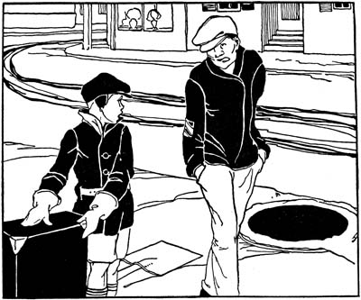
“Aw, yer won’t, won’t yer? We’ll see,” sneered the ruffian
Then—Ah, the trusty snow shovel, Davy’s ally that hadn’t been reckoned on. Trip-ity-rip! Over it went the enemy with an ugly growl, sprawling into the gutter!
And the car had stopped, depositing a broad-shouldered young man who saw what[22] had occurred and was now making rapid strides toward Davy. The ruffian, scenting trouble, picked himself up, and limped a double-quick retreat through the shadow and around the corner—without the bag!
“Well, well, here you are, standing by your guns, just as she said you’d be!” The young man was addressing Davy, who had managed to get on his legs once more and regain his charge. “Say, but you’re game all right!” At the word of appreciation and the comradely slap on his shoulder, Davy suddenly didn’t mind any more about the long waiting, losing the job, and having the wind knocked out of him.
“You’re looking pretty white about the gills, though,” the big young man’s voice was very kind. “Beastly long ten minutes, wasn’t it? She didn’t count on fainting, you see, and that sort of thing. She’s my sister—teaches in the South—was going to spring a surprise on the family by coming[23] home for the holidays. Here, I’ll take that ark off your hands and start you homeward. Your folks’ll be getting worried about you.”
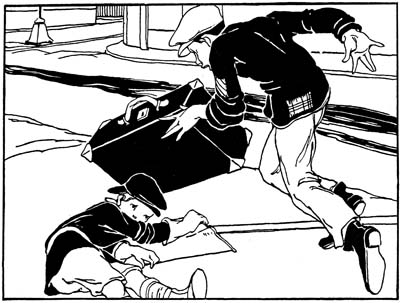
Ah, the trusty snow shovel, trip-ity-rip! Over it went the enemy
Oh, how Davy longed to accept the proffered release! But no, “I—I—I can’t,” he stammered. “I promised, and a scout has to keep his word.” Oh, it was hard to say “no” to this friendly young man. It took almost more courage than fighting the ruffian.
[24]“Well, that’s a good one on me!” The big young man turned away his face to save Davy’s feelings. “A scout, did I hear you say?” He was quite serious now. “But you’re some way short of twelve?”
Then, of course, Davy had to tell about the secret badge, who he was, where he lived, Cousin Fred, and the encounter with the ruffian.
“Come, give us your hand, brother scout. You’re the real article, certificate or no certificate!” Davy’s small, mittened palm was taken in a mighty grip. “Now stand on the suitcase and look here”—the big young man opened his greatcoat—“on my sleeve, can you see?” taking out a pocket flashlight.
Davy saw. The badge of the scout master—a sure guarantee of all that was honorable and loyal, trustworthy and brave. It was like the coming of the Prince in fairy tales. Davy’s eyes glowed. Words[25] failed him, but off came his right red mitten and three fingers were raised to his forehead in reverent salute. Then he quietly slipped from the suitcase, and, the weary watch over at last, joyfully resigned his charge into lawful hands.
“I say! you’re a dandy little scout, just the kind I’m looking for. And if only I were a magician, I’d hustle those next three birthdays of yours along in no time at all. But here’s your car—you’ll hear from us later. Good-by!” And with a parting slap for Davy and a nickel to the conductor, the scout master was gone.
On Christmas morning there came a package and a letter for Davy, both in the same unfamiliar hand. The package contained a most wonderful book, and the letter read:
My Dear Little Merry Scout:
Yes, that is what I have named you, for where would there have been any Merry Christmas for me[26] but for your valiant defense of my precious bag! I am so sorry for what you had to endure on my behalf, but I am very happy to add to my acquaintance one more person who can be trusted, whatever the cost to him. Surely, never was a real, truly boy scout more faithful to his oath than my little scout of the secret order.
I hope you will enjoy the Animal Book and Camp-Fire Stories, by Dan Beard, National Scout Commissioner, which my brother and I are sending you as a small token of our gratitude.
We are planning to see you very soon.
Most cordially your friend,
Agatha Alden.
“Gee!” gasped Davy, turning rapturously from letter to book and back to letter again. “But any scout would have had to do it, wouldn’t he, Dad?”
Father, admiring his new Christmas tie before the sideboard mirror, smiled down into Davy’s earnest face reflected therein. “I should certainly say he would, my son,” he agreed, without hesitation. But the eyes he turned to Mother, across the room, were brimming over with pride.
[27]
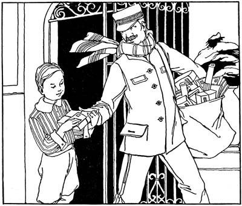
On Christmas morning there came a package and a letter for Davy
“Our little Merry Christmas Scout,” softly responded Mother, who was tending a gay little Jerusalem cherry tree at the window. Sometimes there are bargains, you know, the last thing before Christmas, and so Davy’s ten-cent shortage didn’t matter, after all!
Lakeside Park was fairly a-blossom with children that bright summer morning, babies and babies—chubby little boys in clean jaunty blouses, dainty little girls, fresher than the posies as they skipped about in their spick-and-span frocks—all safeguarded by grown-ups.
Bumpity-bump! Nurses, big sisters, and children turned out in a hurry to make room for Tilda, of the tenement, and baby Maggie in her brand-new coach. Tilda nodded and smiled shyly at the other little boys and girls as she pushed along the gorgeous gocart, a present that very morning from dear, freckled, carrot-headed Pete, of the same crowded tenement. Pete had made it his own self a-purpose for Maggie, out of a nice soap box and a pair of old[29] wheels taken in trade with the rag man. And the red paint—the crowning glory of it all—he had earned doing odd jobs for Michael, the carpenter.
Wee Maggie, scrubbed to a polish, dimpled and babbled as she rumbled along. And what mattered to Tilda any longer the hot mile of dusty city walk—the tiresome journey from the tenement—now at last she had reached her beloved park? Oh, the cool, woodsy, sweet-smelling park! Here you could see such lots of the blue sky above the wavy trees and look as much as you liked at brilliant beds of geraniums and verbenas—so long as you didn’t pick them. And here, down by the ripply water, you could watch the whitest swans gliding along so elegantly, but not too superior to accept the bits of cake tossed from the bank by their young admirers.
By and by Tilda turned into a secluded path and came suddenly upon a lady seated[30] all alone on a rustic bench. She was leaning her head on one hand and paying not a speck of attention to any of the beautiful things about her, not even to Mr. Robin, who was calling “cheer up” so insistently from the tip-toppest twig of the neighboring birch.
Deary me, what could be the matter? Tilda halted for exactly one quarter of a minute, then, dropping the cart handle, tiptoed across the grass, and, gently nudging the lady’s arm, whispered, “Are you sick, missis?”
The stranger started and glanced up, very much surprised to find a small girl in a faded, patched gingham gazing at her with solicitous gray eyes.
“Oh, no, child, I’m not ill, thank you! What made you think—but who is that little one in the wagon?” she asked with a sudden show of interest, interrupting herself.
[31]
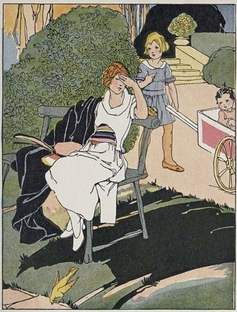
Deary me, what could be the matter?
[32]“Why, that’s my baby.” Tilda grew tall with pride.
“Your baby!” The sad lady very nearly smiled.
“Yes, isn’t she grand?” Tilda shoved the cart close up to the bench. “She’s Maggie. Open your mouth, Maggie, and show the missis your teeth.”
“She is a dear baby,” agreed the lady wistfully, patting Maggie’s little tow head with tender fingers.
“Maybe you’ve got one at home, too?” ventured Tilda.
“N-no, not now.” The lady’s voice was, oh, so sorry! A big lump came right up into Tilda’s throat and tears had started on their way when a happy idea sent them straight back again.
In less than two shakes of a lambkin’s tail she had snatched wee Maggie from the gocart and landed her pat on the strange lady’s lap.
[33]
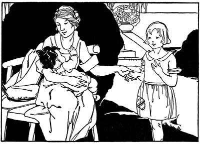
The lady snuggled Maggie close and held out one hand to Tilda
“I’ll lend you my baby, missis,” she offered softly. “You can take her every day. I’ll fetch her in the gocart and”—Tilda faltered, then continued bravely—“you can make b’lieve she’s yours and not ours at all.”
“Oh, thank you, dear!” Really truly smiles now chased away the lady’s tears. She snuggled Maggie close and held out one hand to Tilda.
[34]“Yes, indeed, I should like to borrow wee Maggie often, and you, too, little mother! You are better than the sunshine. Come sit down here and tell me all about yourself and baby.”
The stray passers-by smiled with friendly interest at the odd trio seated there so cozily on the park bench: cheery little Tilda from the tenement in her faded blue gingham, punctuating the conversation with intermittent bobbings of her funny, homemade Dutch cut; the beautiful young woman known to society as a wealthy banker’s wife—Tilda immediately had dubbed her “Fairy Godmother”—in an immaculate white costume; and wee, rosy Maggie in a pink dotted calico cuddled between them.
Fairy Godmother listened with a strange, new awakening as Tilda, with glowing eyes, went on to enumerate all her riches. First, of course, there was Maggie, the[35] sweetest baby in the world, and dear Mother, who worked so hard to provide for them since Father’s death. Then there were her precious day school and Sunday school, the enchanted park—Tilda loved to pretend it was full of fairies—and there were Pete and the gocart, and now there was Fairy Godmother herself.
“Tilda,” a light struggled bravely through the mist in Fairy Godmother’s eyes, “this is my own baby’s birthday—darling little Anne, who was lent to us for twelve happy months, then taken back by the Father of us all. It was to this same park nurse and I used to bring her, and so I came here today to keep her birthday. But your bright little selves have shown me a better way. Yes, I’m going to borrow you both and take you to my home to help me change this day from the saddest to the gladdest day of all the year.”
[36]
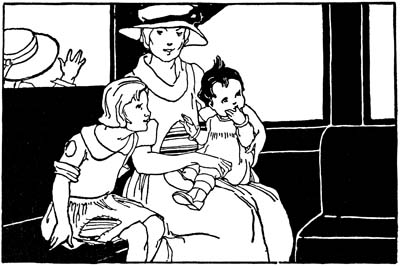
Shortly they were spinning along in the trolley, the gocart on the rear platform
Shortly they were spinning along in the trolley, with the precious gocart on the rear platform. And before Tilda had a chance to really “come to,” Fairy Godmother was saying, “Here we are.” The car stopped, the jolly conductor helped them out, gocart and all, and in a moment more Tilda found herself entering the “stylishest” house she had ever seen. She followed on tiptoe into the grand hall, up the wide stairs, and stepped[37] straight into fairyland. It wasn’t any dream kind, either, that you wake up from right in the most exciting place. Tilda made sure of that by biting her finger hard—and it hurt.
Fairy Godmother deposited Maggie on the lovely blue center of the loveliest-of-all rugs—Tilda’s feet were loth to tread on any of them. Then she touched a funny little button, and, presto! it was just like Arabian Nights, excepting it wasn’t one of the genii that appeared—only a pretty, rosy-cheeked woman, in the tiniest white cap and apron. She stood in the doorway, looking so surprised at the little strangers that Tilda became suddenly conscious of the patches in her gingham frock, and the places where there should have been patches in her shoes.
“Norah,” reminded Fairy Godmother gently, “this is little Anne’s birthday, and these dear children have come to spend it with me and help to make it glad.”
“Yes, marm,” responded Norah. And[38] Tilda followed her glance to the life-sized portrait of a wee blue-eyed baby as sweet—yes, as Maggie herself. Fairy Godmother had a little tête-à-tête with Norah, who soon left the room, turning as she went to send an assuring smile to the now welcome visitors.
Then Tilda and Maggie went to a wonderful concert—all the time staying just where they were. Ladies and gentlemen they couldn’t see at all came and sang to them, and whole orchestras and bands, all from the same mysterious little box, played music that set delicious thrills shivering down Tilda’s back, and her feet to beating time. Sousa’s band had just finished “El Capitan” when some sweet little chimes tinkled out in the hall.
“Come, Tilda.” Fairy Godmother picked up Maggie and led the way downstairs, out to the honeysuckle porch overlooking the garden.
[39]
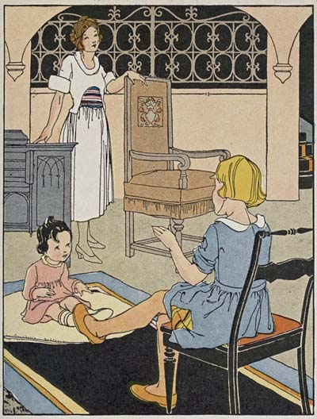
Tilda and Maggie went to a wonderful concert—all
the time staying just
where they were
[40]There, as if the fairies had been at work, stood the dearest little table that ever was, on land or sea, with rosebuds in the middle and set for just three, with little rosebud dishes. My! but that was a party for any royal princess, cocoa with a lovely white foam on top, tiny three-cornered chicken sandwiches, ice cream and strawberries—two plates if you wanted them—frosted cake and candy besides, and milk for Maggie from a real silver cup! The only sorry part of it was baby Anne could not be there, too, for her own birthday. Probably heaven was just as nice, though Tilda could scarcely believe it.
After the “party” Maggie was tucked up cozily on the veranda couch for a nap, and Tilda was escorted to the garden to meet General Jack, Lady Gay, Baltimore Belles, American Beauties, and other celebrities, to say nothing of the pert little Pansy folk, who turned up their saucy faces at her. And Fairy Godmother said she might pick all the roses she wanted, her own self. Fancy it—dozens of them—red, white, and[41] pink, like the grandest lady of the land! And every now and then, as Tilda stole a shy glance at Fairy Godmother’s glad face, her own beamed brighter than ever.
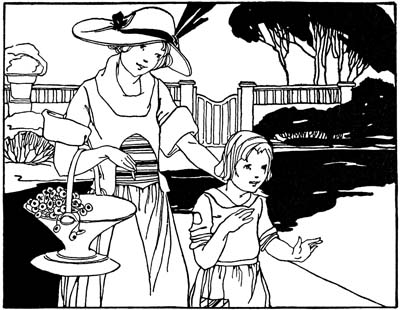
Fairy Godmother said she might pick all the roses she wanted
An hour flew by as hours only can in Fairyland gardens.
“Honk, honk!” Tilda jumped to one side quicker than pop, it sounded so near,[42] and Fairy Godmother, standing on the porch with wide-awake Maggie in her arms, laughed outright.
“It is talking to us, Tilda,” she explained, “and says, ‘Come out front.’”
There by the curb stood a splendid great, shiny auto, waiting for Tilda and Maggie.
Out from the front seat hopped a nice big man with a nice big smile to match, to help them all in and get them settled.
“This is ‘Fairy Godfather,’ Tilda,” introduced Fairy Godmother. “He’s heard all about you and Maggie over the ’phone.”
“I’m delighted to meet you, Miss Tilda and Maggie,” he said in a nice big voice as he held out his hand, and Tilda felt almost too magnificent to live.
Norah now came flying out with a mysterious box, which she handed right over to Tilda. Then Fairy Godfather packed in the gocart and away they whizzed for the tenement—by way of the shore.
[43]Two hours later, when tired Mother came home from her long day’s work, a radiant and breathless Tilda met her at the door and invited her to a royal spread.
“Do have some more cake and another cup of tea,” insisted the little hostess gayly. “And just think, Mother, a trip to the country for all of us for two whole weeks! Isn’t it grand? And there’ll be cows and chickens and green grass and flowers, and the rent paid all the while we’re gone! But most the wonderfulest part of it all”—Tilda’s eyes grew starry—“was how Fairy Godmother kept getting gladder ’n’ gladder all the time. And she said ‘thank you’ to me, Mother, and Fairy Godfather did, too, ’s if I’d done anything, when you know positive sure I never did one single thing ’cept lending Maggie.”
“I’m not so sure about that, dear.” And Mother patted the scraggly Dutch cut tenderly, smiling into Tilda’s questioning eyes.
“Good-by, Robert,” called Mother, as she and Father drove off for the city one summer afternoon. “Don’t forget to fill the wood box, dear, and to feed the chickens.”
“Good-by,” answered the boy from the stone wall, without looking up.
Robert was discontented. He was tired of filling the wood box and feeding the chickens every day, and for only five cents a week. Five cents a week! Yes, that was all he had to spend for candy, marbles, and everything, while Timmie Marsh, who lived down the road, had a nickel about every day, and he never had to work at all.
Robert had been thinking and thinking what could be done about it, and at last he had made up his mind. He would go to Blakeville that very afternoon to old[45] Nurse Tucker’s. He could walk four miles easily, and Nurse would be so glad to see him.
“Of course,” he said to himself, “I’ll write to Mother, so she’ll know I’m not drowned or anything. And I’ll tell her how Nurse gives me five cents for candy every day—’course she will—and how I don’t have to do any work, either. Then won’t Daddy come for me quick and say if I’ll only go back with him, I needn’t bring in the wood or feed the chickens or do anything unless I feel like it, and I can have all the money I want, besides!”
And now, as the buckboard vanished in the distance, Robert turned toward the house to carry out his plan. He could hear Mandy, the hired girl, singing at her work as he tiptoed cautiously in at the wood-shed door and up to his room.
After giving his hair one hasty stroke with the brush and putting on his Sunday[46] shoes and stockings, he considered his toilet completed and was soon stealing out of the wood shed again, unobserved by Mandy.
A moment later Robert was skulking through the barnyard, making a bee line for the blueberry lot and the turnpike. But what made the chickens act so queerly? Mrs. Bantam, with her head cocked on one side, eyed him suspiciously as he crept along, while the great white rooster flew upon the coop and screamed right out, so loud that Robert feared the whole village would hear. “What-you-going-to-do-oo? What-you-going-to-do-oo?” Robert did not think best to answer, but was only more eager than ever to move on his journey.
He had no sooner struck the blueberry lot, however, than Lady Ann, the Jersey cow, started for him, and, poking out her head, exclaimed in mild surprise, “Oo-oo! oo-oo!”
[47]
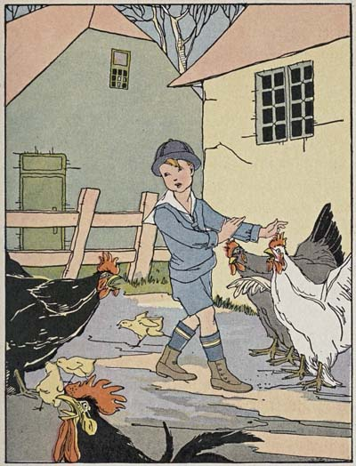
“What-you-going-to-do-oo? What-you-going-to-do-oo?”
[48]And he had barely reached the road, when, to cap the climax, the sheep from the stony pasture across the way began to chide him. “Ba-ad! Ba-ad!” they bleated.
“No, I’m not bad, either!” cried Robert almost in tears. Here he had gone cross-lots purposely to escape the villagers and now the animals were all after him! And, stuffing his fingers in his ears, he began to run.
The summer sun was blazing; still Robert kept on, though with ever-slackening speed, meeting no one but a stray dog or two and an occasional ox-team with its sleepy driver. At length he came to a big sign post which read:
BLAKEVILLE 3 MILES
“P’r’aps I’d better sit down a minute,” he said to himself. “I’m not tired, of course, and my shoes don’t hurt—only just a little bit. I guess there won’t be anybody to catch me ’way out here.” And as he sat rubbing his hands over the shoes that did not hurt, he encouraged himself with visions of the candy counter at Nurse’s village store.
[49]“Why, Robert, little man, what are you doing so far from home?” There was no escaping an answer this time, for it was Mrs. Bronson, the minister’s wife, who stood before him.
“O—er, I’m—er going for a walk, Mrs. Bronson,” he stammered, jumping up; and, taking off his cap, he turned on his heel and started on again, never once daring to look behind.
But the Sunday shoes were soon pinching in good earnest. He could stand them no longer, so he pulled them off, and, swinging them on his shoulder, went on in his stocking feet.
Uphill and downhill he trudged. How hot the sun was! And how tired and bruised his poor feet were getting!
“I guess I’ll take another little rest,” he said as he limped across the road. “It’s nice and shady here by the brook and I am some tired.”
[50]Down upon the sweet green grass he lay. The candy counter at Blakeville was beginning to lose its charm, and—
Robert sat up in a sudden fright. A solemn voice was calling to him from the woods: “Bubby-gu-hum! Bubby-gu-hum!”
Robert turned fearfully, and there, on a stone in the brook, sat a great, blinking frog.
“I won’t go home, you naughty frog!” he cried. “I’m going to Nurse’s.” Then, ka-splash! and Mr. Frog had disappeared.
There was a queer buzzing in Robert’s head, and presently he was fast asleep in spite of himself.
The sun set. The little boy slept on. A cool breeze came up, and Robert tried to pull the bedclothes over him, but there weren’t any clothes to pull—and he awoke.
He sat up and looked around. What could it all mean? When finally it dawned upon him where he was, he set up a wail and then stood in bewilderment.
[51]
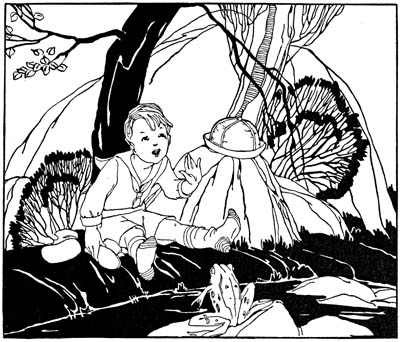
“I won’t go home, you naughty frog,” Robert cried
In a moment he started in fresh horror, hearing wheels close at hand.
“Supposing it’s gypsies,” he groaned, “and they should carry me off! Oh dear! Oh dear!”
Nearer came the wheels. There was no way of escape. All he could do was to[52] drop down beside the road and keep so still maybe they’d think he was a log of wood.
Now he heard voices. There might be twenty of them. Twenty gypsies! Could it be they were going by without noticing him? Robert hardly dared to breathe.
“Whoa there! What’s this?”
A big man leaped from the team. Robert closed his eyes and tried to pray. But all that he could think of was, “Now I lay me,” and that would never do.
A lantern was flashed in his face. “Bless my stars, if it isn’t our own Robert!”
“O Daddy, Daddy!” sobbed a frightened little voice.
Two strong arms lifted the shivering little fellow and placed him in the buckboard right beside his own mother.
“Robert, Robert!” she cried tremulously. “How did you ever get way out here at this time of night?—and in your stocking feet!”
[53]
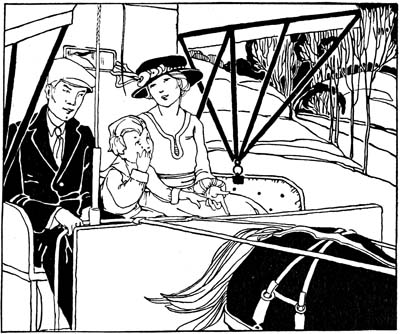
“Oh, Mother, I want to go home, and I’ll bring in the wood,
and feed the chickens”
“Oh, Mother, I was g-going to Nurse’s and my shoes hurt and I went to sleep, but I don’t want to go there any m-more. I want to go ho-home, and I’ll bring in the wood, and f-feed the chickens every day, and you needn’t give me any m-money at all!”
[54]Then Mother, who was a wonderful magician, understood all about it.
“Oh,” she cried softly, “supposing we had gone home by the other road!”
But Father said, “Let’s see. It isn’t too late yet. Shan’t we turn around and carry him to Blakeville?”
“Oh, no, no!” pleaded Robert, clutching his father’s arm, “I want to go ho-ome.”
“Humph! you’ve really changed your mind then, have you? Well if that’s the case, we’ll jog right along. Get up, Daisy.”
And Robert, snuggled there up against Mother, so safe and warm, at that moment would not have changed places with any boy living; no, not even for all the candy in the Blakeville store!
“Tomorrow’s Valentine’s Day, Jeanie.”
“Yes, Sandy, I know.” Jeanie turned gently to the little brother, whose face was all swollen with mumps.
“Say, Jeanie, wouldn’t it be nice to have a truly valentine with lace and angels on it, like what’s in the store windows? Do you ’spose I will get one tomorrow?” he asked wistfully.
“Maybe you will, Sandy.” Jeanie smiled bravely, but her heart ached for the disappointment she feared was in store for him. How she was longing for a “truly” valentine herself, she did not breathe to Sandy.
There were many things that sadly puzzled seven-year-old Jeanie. Why should Father have gone to heaven to stay forever[56] when they all needed him so badly? Why did the rent man come so often to take all Mother’s money as fast as she saved it? Why did the grocer never bring a turkey to their house on Thanksgiving or Christmas? And why did the postman never stop at their door, even on holidays, when he had so many packages? It seemed as if one, at least, must certainly be meant for them.
Jeanie was turning it all over in her mind now, as she made Sandy’s bed, this morning before Valentine’s Day, when suddenly a bright idea came into her head, and, darting across the room to a rickety little table, she opened the drawer and pulled out a piece of druggists’ white paper. Smoothing it out on the table, she folded the two short edges carefully together.
“It looks just like boughten letter paper now, don’t it, Sandy? But you mustn’t ask a single question, because it’s a surprise,” she said, settling herself to write. Then for[57] thirty long minutes, Jeanie’s stub pencil crawled painfully over the white surface. It was a hard task for her, especially as Mother wasn’t at home to help with the spelling.
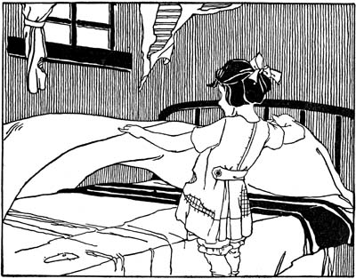
Jeanie was turning it all over in her mind as she made Sandy’s bed
At last Jeanie heaved a deep sigh of relief. “There,” she said aloud, “it’s all ready now but the unvelope.” Whereupon she took[58] from the family Bible a treasured envelope she had picked up in the street one day.
“It’s a perfectly good unvelope, all unstuck same’s a new one,” she said to herself “and a nice green stamp on it. All the matter is, it’s wrote on a little, but I can scratch that out all right.” And soon the second-hand envelope was ready and the letter tucked inside.
“I must go to school now, Sandy!” cried Jeanie, running for her coat and hat. “Mother’ll be home pretty soon. Good-by.” In a moment she was out of the door and hurrying to the mail box on the corner, where, standing on tiptoe, she dropped in the precious missive.
That noon, as Postman Green sat at dinner with his wife, he suddenly exclaimed, “Oh, I ’most forgot my valentine!” and he pulled from his pocket a sorry-looking envelope, directed to “Mister Postman himself.”
[59]
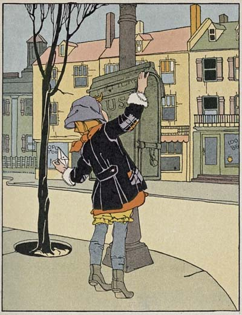
Jeanie, standing on tiptoe, dropped in the precious missive
[60]“From one of my young admirers on Gregory Street,” he laughed, passing it to his wife.
Mrs. Green tore it open. “Why, it’s a letter,” she said, proceeding to read aloud:
Dear Mr. Postman:
I thort I wood rite you about Sandy’s valuntin; he wants one orful—one of those kind with lace and angels on it what come in unvelops. He has got the mumps and can’t go out, and Mother ain’t got any money to buy a valuntin, and father has been in heaven a long time. Won’t you plees look everywhere around the post-orfice, and in all the boxes on the lamp-posts, and see if you can’t find one for him? His name is Sandy Keith, and we live in the little brown house, number 27 Gregory Street, wher you don’t ever stop, even on Christmus. I will be looking for you at the winder tomorer noon. Plees don’t go by or cross the street this time.
From your frend,
Jeanie Keith
“Poor little things! They mustn’t be disappointed!” cried Mrs. Green.
“Indeed, they shan’t be,” answered the postman soberly. “I’ve just thought up[61] the nicest little scheme. I’ll tell you how it all comes out tomorrow.”
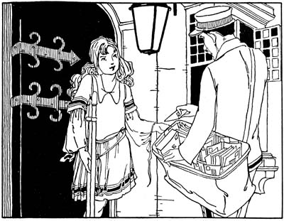
The door was opened by a pale-faced little girl, leaning on a crutch
Late that afternoon Postman Green rang the bell of a fine stone house on Hillside Avenue. The door was opened quickly by a pale-faced little girl, leaning on a crutch.
“Only five of them for you in this mail,” laughed the postman, as she held out[62] her hand, “but here’s a valentine I got this morning I’d like you to see. I’ll call for it tomorrow.”
“Poor little rich girl!” he said to himself, as he went away. “She’ll have something new to amuse her now.”
The next noon Jeanie came home from school in a quiver of excitement. Sandy met her with a rueful face. “It ain’t come, Jeanie,” he cried reproachfully.
“But Valentine’s Day isn’t over yet,” laughed Jeanie gaily. And, dinner dispatched as soon as possible, she took her stand at the window.
At that moment, several blocks away, the postman was again stopping at the door of the great stone house.
“I’m so glad that you showed me your valentine,” the little girl on the crutch was saying, with sparkling eyes, “else I’d never have known anything about them. Thank you so much. It’s the best fun I ever had.”
[63]It seemed a long time to Jeanie, stationed at the window, before the familiar blue coat came in sight.
“Oh, here he comes, Sandy!” she cried at last, clasping her hands tightly together, “and he sees me, and he’s waving something white!”
Jeanie flew to the door and opened it before the postman had time to ring.
“For Master Sandy Keith,” he announced, holding out a great white envelope.
“That’s him, that’s him!” cried Jeanie wildly, pointing to Sandy, who, regardless of mumps, had followed her. “Oh, thank you, Mister Postman! I knew you’d come. But where did you ever find such a big one?”
“For Miss Jeanie Keith,” continued the postman, not seeming to hear, taking from his pack another envelope as big as the first.
“Why, that’s me!” Jeanie caught her breath. “And I wanted one awful. But how did you know?” The postman only smiled.
[64]“By the way,” he said, as he turned to go, “I’ll be stopping again before long. There’s a Christmas box that ought to have been left here nearly two months ago. I’m real sorry I’ve neglected you all this while.” Then he hurried off.
Such valentines were never seen in Gregory Street before as were set up in the window of number twenty-seven that day, nor two such bright faces as peeped out from behind.
“Do you ’spose there’s anybody in the whole world as happy as we are, Sandy?” Jeanie asked a dozen times over.
“’Course not!” responded Sandy indignantly each time.
But they did not know about the little girl on a crutch in the fine stone house, who was brimming over with joy that day because she had adopted two little stranger friends, to be their valentine the whole year round.
TRANSCRIBER’S NOTE:
Obvious typographical errors have been corrected.